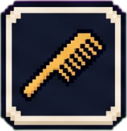
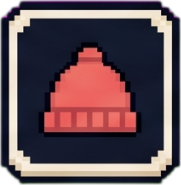
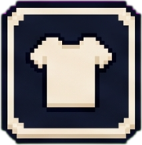
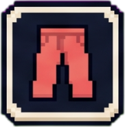
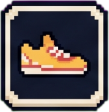
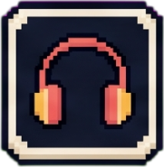

오프라인 상태예요. 인터넷 연결을 확인해주세요.
Murpy
로그인
Move together
카카오로 로그인하기
구글로 로그인하기
운동하는 사람들의 커뮤니티
지금 머피에선
지금 인기
sponsored
오늘 운동 인증하기
취소
사진 조정
다음
핀치로 크기 조정 · 드래그로 위치 이동
머피캠
적용 중…
태그
선택
운동
식단
오늘의 매칭
같이 운동할 메이트를 찾아요
인증완료
이번달
회 인증
일 연속
매칭 기능을 쓰려면
로그인이 필요해요
운동 메이트를 찾고 같이 운동해요
로그인하고 시작하기
패스
같이 운동해요
더 많은 추천
대나무숲
운동별 익명 이야기 · 마음이 통하면 연결
익명으로 이야기 남기기…
사진
취소
익명 전송
얼굴·이름표·주변 사람이 찍혀 있으면 익명이 아니게 돼요. 한 번만 확인해 주세요.
최신
인기
내 글
오픈한 스쿼드
+ 만들기
내 크루
탐색하기
전체
강남
마포
성수
용산
강북
서울 전체
머피룸
부르기
오늘의 추억
나가기
0
+
지도
체크인
카메라
같이 찍기
같이 낙서
▲
◀
▶
▼
머피룸 톡
내 캐릭터
꾸미기
퀘스트
센터
+ 센터 등록
전체
강남
마포
성수
송파
용산
관악
영등포
노원
광진
서초
강동
구로
전체
파트너 구하기
리뷰
취소
프로필 사진
완료
드래그로 위치 · 핀치로 크기 조정
←
내 프로필
관리자 모드
로그아웃
나
0
베타 무제한
정보
사진
머피
성별 · 나이
—
운동 목적
—
운동 시간대
—
활동 지역
—
운동 종목
—
운동 경력
—
한줄 소개
—
프로필 수정
버그 제보 · 베타 설문
차단한 사람
머피 지급 (관리자)
신고함 (관리자)
앱 소개 다시 보기
머피월드 입장 연출 다시 켜기
온보딩 화면 테스트 (관리자)
머피월드 홍보 팝업 테스트 (관리자)
콜드유저 코치마크 테스트 (관리자)
사용 기록 보기 (관리자)
성장 지표 · CC (관리자)
머피 2000 채우기 (관리자)
지난 피드 빡빡이 고치기 (관리자)
헬스장 좌표·시딩 정비 (관리자)
새 헬스장 추가 (관리자)
스쿼드 광고 카드 (관리자)
매칭 전체보기: 꺼짐 (실사용자와 동일)
다른 사람이 내 프로필을 볼 때 스와이프로 넘겨보는 사진이에요. 프로필 인증에도 쓰여요.
사진 추가
순서 변경
알림
켜기
이용약관
·
개인정보처리방침
문의 murpyapp@gmail.com
계정 삭제
Murpy
· © 2026 김현수
프로필 인증
정면을 보고 셀카를 찍으면, AI가 프로필 사진과 자동으로 대조해요. (사진은 저장되지 않아요)
준비 중...
촬영하고 인증
닫기
←
정보
파트너
대나무숲
리뷰
←
센터 편집
관리자
사진 (첫 번째가 대표 사진)
+ 사진 추가
소개글 (광고 문구)
최신 소식 / 이벤트
추가
기본 정보
센터 이름
종류
지역
주소
좌표 (위도, 경도) — 체크인 반경용 · 네이버지도에서 우클릭→좌표복사
로고 — 도감 픽셀 썸네일용 (정사각 권장)
로고 업로드
픽셀 로고 — 도감 뱃지용 (투명배경 PNG, 없으면 일반 로고 자동픽셀화)
픽셀 로고 업로드
공식 제휴 센터 (도감 뱃지 금테 + 반짝임)
저장
별점과 리뷰를 남겨주세요
☆
☆
☆
☆
☆
별점을 선택해주세요
등록하기
취소
리뷰 신고
신고 사유를 선택해주세요
허위사실
욕설·비방
스팸
기타
신고하기
취소
정보 수정 요청
수정이 필요한 내용 *
연락처 (선택)
요청 제출
취소
←
센터 등록하기
내가 다니는 헬스장이나 센터를 등록하면 같은 센터 멤버를 찾고 파트너를 구할 수 있어요!
센터 이름
종류
헬스
크로스핏
클라이밍
필라테스
요가
복싱
수영
기타
지역
상세 주소 (선택)
센터 등록하기
←
←
차단한 사람
←
운동 인증
←
대나무숲
←
댓글
↑
←
알림
모두 읽음
명예의 전당 보기
닫기
다시 보지 않기
0
0:00
나가기
from
덤벨 피하기
눌러서 시작
내 기록 보기
이렇게 하면 돼요
덤벨
맞으면 끝
프로틴
+10점
치킨
-15점
화면을
드래그
해서
캐릭터를 움직여 피해보세요!
난이도
시작!
뒤로
내 기록
뒤로
나가기
게임 오버
다시 하기
난이도
그만
홀
1
/3 ·
0
타
0
점
나가기
드라이버
from
홀인 머피
눌러서 시작
내 기록 보기
이렇게 하면 돼요
홀
살살 굴려야 쏙
벙커
다음 샷 약해짐
연못
벌타 1
공 뒤로
당겼다 놓으면
세기와 방향이 정해져요 · 3홀 · 적은 타수가 고득점
난이도
선수 고르기
뒤로
누구로 칠까요?
캐릭터마다 파워·정확·바람이 달라요
시작!
뒤로
내 기록
뒤로
나가기
라운드 끝
다시 하기
난이도·선수
그만
←
명예의 전당
←
좋아요
받은
보낸
←
톡
←
우리 매칭할까요?
←
프로필 수정
관리자 모드
닉네임
성별
남성
여성
비공개
생년월일
운동 목적
다이어트
근력강화
건강유지
대회준비
운동 시간대
(복수 선택)
새벽
낮
저녁
심야
활동 지역
한줄 소개
(선택)
다니는 센터
*
(최대 3곳)
고른 센터는
체크인 탭
에 바로 떠요. 목록에 없으면 직접 입력해도 돼요.
운동 경력
(선택)
선택 안 함
1년 미만
1년차
2년차
3년차
4년차
5년차
5년 이상
저장
←
크루 만들기
크루 이름
한 줄 소개 (크루 찾기에 표시)
크루 소개 (홈 화면에 표시 · 최대 500자)
활동 지역
운동 카테고리
입장료 설정 (선택)
크루 생성하기
←
크루 정보 수정
크루 이름
한 줄 소개 (크루 찾기에 표시)
크루 소개 (홈 화면에 표시 · 최대 500자)
활동 지역
저장
←
홈
운영
게시판
사진첩
채팅
↑
+
MURPY PRO
✓ 좋아요 무제한
하루 5번 → 무제한
✓ 댓글 무제한
3개 → 무제한
✓ 먼저 말 걸기
매칭 후 바로 톡
✓ 대숲 신청자 보기
PRO만 확인 가능
✓ 나한테 좋아요 보기
블러 해제
월 9,900원으로 시작하기
다음에 할게요
신청자 목록
"저에요"를 누른 분들이에요 · 닉네임만 표시돼요
머피와 함께 시작해요
이 기능은 로그인 후 사용할 수 있어요
Google로 로그인
카카오로 로그인
나중에
운동하면 머피가 쌓여요
하루 한 번 운동을 인증하면
5머피
가 쌓여요.
체크인·범프·스쿼드 출석으로도 쌓여요.
머피로
매칭 신청
과
대숲 글쓰기
를 할 수 있어요.
매칭 보러가기
대숲 가기
닫기
취소
확인
캐릭터 잠금해제
근방단에게 받은
코드
를 입력하면
한정판 캐릭터가 열려요
잠금해제
닫기
입어보는 중 · 아직 사지 않았어요
되돌리기
머피 충전
머피는
운동 인증
으로 쌓여요.
매일
오늘의 연결 3회
는 무료예요.
500머피
운동 인증된 5명에게 연결할 수 있어요
9,900원
2,000머피
20명에게 연결 · 12% 저렴
34,900원
4,500머피
45명에게 연결 · 23% 저렴
69,000원
결제는
곧 열려요
· 머피는 머피월드 꾸미기·펫·그림에도 쓸 수 있어요
닫기
머피월드
운동이 캐릭터가 되는, 나만의 평행우주
운동을 인증하면
머피
가 쌓이고
머피로
내 캐릭터와 방
을 꾸며요
헬스장에서
체크인
하면 도장이 찍히고
지도
위에 내 캐릭터가 그대로 남아요
입장하기
다시 보지 않기
머피월드
입장씬 다시 보지 않기
운동 인증 스트릭
매일 운동을 인증하면
연속일
이 쌓여요.
하루라도 거르면
1일부터 다시
시작!
꾸준할수록 매칭에서
'검증된 운동인'
으로 보여요 — 연속일·이번달 인증 횟수가 프로필에 표시돼요
매일 인증할 때마다
머피
도 함께 쌓여요
오늘 운동 인증하기
닫기
운동 인증 메달
운동을 인증할수록
메달
이 올라가요.
이름 옆에 붙어서
꾸준한 운동인
임을 보여줘요.
누적 인증
10 · 30 · 50 · 80 · 100
회 달성마다 메달 등급이 올라가요
브론즈 → 실버 →
골드
까지, 오래 운동한 사람일수록 높은 등급
오늘 운동 인증하기
닫기
운동 인증 사진
오늘의 운동, 어떻게 남길까요?
사진 찍기
카메라로 바로 인증
앨범에서 선택
저장된 사진 불러오기
취소
MURPY
운동하는 사람들의 커뮤니티
기본 정보를 알려주세요
파트너 매칭에 활용돼요
닉네임
성별
남성
여성
비공개
생년월일
생일에 축하해 드릴게요 · 나이는 여기서 자동으로 계산돼요
다음 →
운동 스타일을 알려주세요
AI 파트너 매칭에 활용돼요
운동 목적
(선택)
다이어트
근력강화
건강유지
대회준비
운동 시간대
(선택 · 복수)
새벽
낮
저녁
심야
주 활동 지역
주로 하는 운동
*
(복수 선택)
헬스
러닝
테니스
골프
등산
클라이밍
요가/필라테스
수영
자전거
축구/풋살
배드민턴
크로스핏
복싱/주짓수
기타
한줄 소개
(선택)
다음 →
프로필 사진을 등록해주세요
얼굴이 보이는 사진일수록 매칭이 잘 돼요
머피 시작하기
←
사진 수정
사진 삭제
운동을 좋아하는
사람들은
생각보다 많습니다.
아직 만나지 못했을 뿐.
FEED
같은 목표를 가진
사람들과 함께해요
운동 기록을 나누고 서로 동기부여가 되어주세요
실시간으로 올라오는
운동 인증
을 확인하세요!
외
142명
이 오늘 운동 인증했어요
정민수
강남구 · 방금
오늘 10km 뛰고 옴. 다리 후들거림
24
8
김지연
마포구 · 1시간 전
집 갈까 5번 고민함
31
12
박건우
성수동 · 2시간 전
주말 클라이밍 첫 완등! 손끝 다 까짐
47
19
MATCHING
같이 운동할
사람을 찾아요
목적·시간대·지역이 맞는
사람과 연결돼요
인증완료
이수현
24
마포구
근력강화
저녁
퇴근 후 같이 운동할 메이트 구해요
원하는 운동 파트너가 있다면
같이 운동해요
버튼을 눌러보세요!
패스
같이 운동해요
대나무숲
운동별·센터별
익명 대나무숲
내 종목, 내 센터 사람들끼리
익명으로 솔직하게
전체
# 강남 헬스장
# 한강 러닝
# 클라이밍
# 테니스
# 골프
# 강남 헬스장 대나무숲
· 익명
저녁 6시쯤 늘 같은 자리에서 운동하시는 분.. 진짜 멋지세요
익명 · 8분 전
5
저에요 7
오운완 찍는 순간이 하루 중 제일 뿌듯함 ㅇㅈ?
익명 · 22분 전
41
익명이 진짜 인연이 되는 과정
혹시 절 말씀하신 거예요? 매일 6시 그분…
맞아요 ㅎㅎ 저예요!
확인되면 매칭 → 1:1 채팅 시작
머피월드
운동한 만큼
자라는 내 캐릭터
인증하면 머피가 쌓이고
캐릭터와 방을 꾸며요
128
내 방






꾸미기
오늘 여기 있어요
오늘도 완료
2026.08.04 19:20
오운완
08.04
체크인
머피 시작하기 →
건너뛰기 ›
다음
매칭 성공!
채팅하기
나중에
Move together
카카오로 시작하기
구글로 시작하기
로그인하고 운동 메이트를 만나보세요
혹시 로그인이 안 되시나요?
가입하면
이용약관
과
개인정보처리방침
에 동의하게 됩니다
로그인이 안 되시나요?
카카오톡·인스타그램 같은
앱 안에서 열린 화면
에서는 로그인이 막힐 수 있어요. 아래대로 하시면 해결됩니다.
1. 기본 브라우저로 열기
지금 보고 계신 화면은 카카오톡 안이라 로그인이 막혀요.
기본 브라우저로 열기
홈 화면에 추가하면 앱처럼 쓸 수 있어요
한 번만 해두면 다음부터는 아이콘을 눌러 바로 들어와요. 로그인도 유지됩니다.
이 방법은
지금의 웹앱(클로즈 베타) 단계에서만
필요해요. 플레이스토어·앱스토어 출시 후에는 앱을 설치하시면 됩니다.
SEASON OPEN
히든 시즌이 열렸어요
운동하고 기록을 남기면
숨어 있던 캐릭터와 인테리어가 열려요
히든 캐릭터 · 오늘부터 시작
헬스장 체크인 기록으로 열려요.
오늘부터 쌓는 기록만
세니까 지금 시작해도 늦지 않아요.
히든 인테리어 · 11월까지
내 방을 꾸미는 한정 오브젝트예요. 기간이 끝나면 다시 만날 수 없어요.
머피월드에서 보기
나중에
Murpy
닉네임을 설정해요
피드와 매칭에서 표시될 이름이에요
저장하기
크루 부스트
탐색 상단에 노출돼서 더 많은 멤버를 모아요
취소
입장료 설정
크루장 80% · MURPY 20% 분배
설정 완료
취소
크루 입장료 · 1회 결제
결제하고 가입하기
취소
수정
삭제
취소
게시물 수정
저장
취소
게시물을 삭제할까요?
삭제 후에는 되돌릴 수 없어요
삭제
취소
모임 만들기
제목 *
날짜 *
시간 *
장소
최대 인원
선입금
선입금 금액 (원)
썸네일 (선택)
이미지 업로드
태그 (선택)
초보환영
고강도
지각벌금
여성전용
설명 (선택)
모임 만들기
일정 삭제
취소
←
신청자 목록
←
공금 관리
+ 지출
현재 공금
0원
불참/취소 패널티 합계 − 지출 합계
출석 코드
멤버들에게 이 코드를 알려주세요 · 30분 유효
------
닫기
출석 코드 입력
크루장에게 받은 6자리 숫자를 입력해요
출석 체크
취소
지출 기록
금액 (원)
사용 내역
저장
취소
멤버들이 QR을 스캔하면
바로 체크인 화면이 열려요
닫기
Murpy
출석 체크
본인 이름을 탭하세요
✓
출석 완료!
게시글 작성
카테고리
공지
모임후기
가입인사
자유
올리기
취소
←
↑
운동 종목 필터
+1
머피
오늘도 운동 완료!
머피를 받았어요
운동으로 쌓고, 매칭·대숲에 써요
운동 인증하고 머피 쌓기
오늘의 운동을 사진으로 남겨요
매칭에서 먼저 다가가기
마음에 드는 사람에게 좋아요
대숲에 익명으로 글쓰기
속마음 편하게 털어놓기
운동 인증하러 가기
매칭 보러가기
대숲 가기
나중에
NEW · 머피월드
내 캐릭터로 노는 머피월드
운동해서 모은 머피로
캐릭터와 내 방
을 꾸미고,
헬스장에서
체크인
하면
지도
위에
내 캐릭터가 도장처럼 남아요
머피월드 구경하기
다시 보지 않기
사진 인화 중
…
다 되면 알려드릴게요
홈
매칭
대숲
스쿼드
머피월드
센터

 0
0
 머피로 내 캐릭터와 방을 꾸며요
머피로 내 캐릭터와 방을 꾸며요 헬스장에서 체크인하면 도장이 찍히고
헬스장에서 체크인하면 도장이 찍히고 지도 위에 내 캐릭터가 그대로 남아요
지도 위에 내 캐릭터가 그대로 남아요